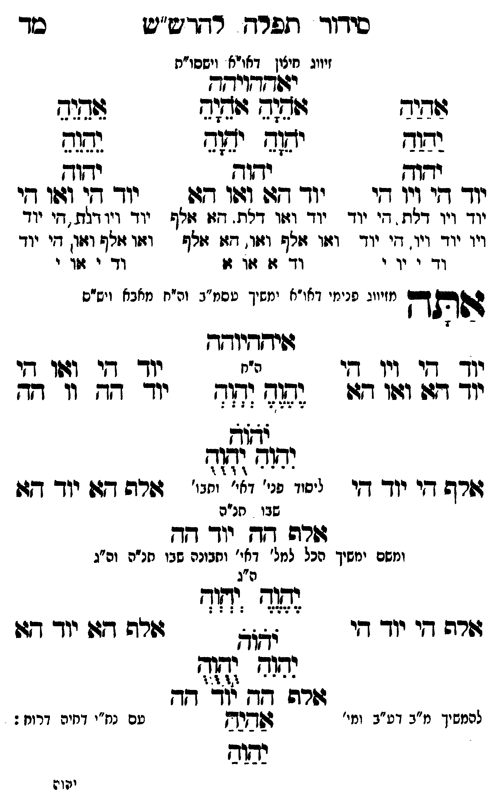

Neue Klartextfassung
[זיווג חיצון דאו"א וישסו"ת] יאההויהה === טבלה === [טור ימין] אַהַיַהַ יַהַוַהַ יהוה יוד הי ויו הי יוד ויו דלת, הי יוד ויו יוד ויו, הי יוד וד י וי י [טור אמצעי] אָהָיָהָ אָהָיָהָ יָהָוָהָ יָהָוָהָ יהוה יוד הא ואו הא יוד ואו דלת, הא אלף ואו אלף ואו, הא אלף וד א או א [טור שמאל] אֵהֵיֵהֵ יֵהֵוֵהֵ יהוה יוד הי ואו הי יוד ויו דלת, הי יוד ואו אלף ואו, הי יוד וד י או י === סוף טבלה === אתה [מזיווג פנימי דאו"א ימשך עסמ"ב ונרנח"י דחכמה ויש"ס] איההיוהה === טבלה === [טור ימין] יוד הי ויו הי יוד הא ואו הא אלף הי יוד הי [טור אמצעי] [ה"ח] יֶהֶוֶהֶ יְהְוְהְ יֹהֹוֹהֹ יִהִוִהִ יֻהֻוֻהֻ [ליסוד פני' דאי' ותבו' שבו חו"ח] [טור שמאל] יוד הי ואו הי יוד הה וו הה אלף הא יוד הא === סוף טבלה === אלף הה יוד הה [ומשם ימשך הכל למל' דאי' ותבונה שבו חו"ח וה"ג] === טבלה === [טור ימין] אלף הי יוד הי [טור אמצעי] [ה"ג] יֶהֶוֶהֶ יְהְוְהְ יֹהֹוֹהֹ יִהִוִהִ יֻהֻוֻהֻ [טור שמאל] אלף הא יוד הא === סוף טבלה === אלף הה יוד הה [להמשיך מ"ב דע"ב ומי' עם נח"י דחיה דרוח דרוח:] אַהַיַהַ יַהַוַהַ
Original gegen neue OCR · Niqqud für Vergleich ausgeblendet
Original
[זיווגK092-001 חיצון דאו"א וישסו"ת] יאההויהה === טבלה === [טור ימין] אהיה יהוה יהוה יוד היK092-002 ויו היK092-003 יוד ויו דלת, היK092-004 יוד ויו יוד ויו, היK092-005 יוד וד י ויK092-006 י [טור אמצעי] אהיה אהיה יהוה יהוה יהוה יוד הא ואו הא יוד ואו דלת, הא אלף ואו אלף ואו, הא אלףK092-007 וד א או א [טור שמאל] אהיה יהוה יהוה יוד הי ואו הי יוד ויו דלת, הי יוד ואו אלף ואו, הי יודK092-008 וד י אוK092-009 י === סוף טבלה === אתה [מזיווגK092-010 פנימי דאו"א ימשך עסמ"ב ונרנח"י דחכמה ויש"ס] איההיוהה === טבלה === [טור ימין]K092-011 יוד הי ויו הי יוד הא ואו הא אלף הי יוד הי [טור אמצעי] [ה"ח] יהוה יהוה יהוה יהוה יהוה [ליסוד פני' דאי' ותבו'K092-012 שבו חו"ח] [טור שמאל] יוד הי ואו הי יוד הה וו הה אלף הא יוד הא === סוף טבלה === אלף הה יוד הה [ומשם ימשךK092-013 הכל למל' דאי' ותבונה שבו חו"ח וה"ג] === טבלה === [טור ימין] אלף הי יוד הי [טור אמצעי] [ה"ג] יהוה יהוה יהוה יהוה יהוה [טור שמאל] אלף הא יוד הא === סוף טבלה === אלף הה יוד הה [להמשיךK092-014 מ"ב דע"ב ומי' ∅K092-015 עם נח"י דחיה דרוח דרוח:] אהיה יהוהK092-016
OCR · fehlbar
סיךןוך ותפרח רחד ש"ש סך זיווגK092-001 חיצון דאויא וישסו"ת יודדדיחדח זודזיש וש( ווג(- צ(דיד אלש יזש(ח ידן נשגב ידוך ידוך 2323 ידך- דזיK092-002 ויו די יודך דדך ודוך גש יוךך דזר גוו איK092-003 יוד ויו דלת . די יוד יוד וצו דח. דצו זזלף יוד ויוודלת דיK092-004 יוד ויו יוד ויו. די יודך וזוו זזלש וזו. דזו זלף וזזו זולף וזזו) דיK092-005 יוד וד י יוK092-006 י ∅K092-007 וד ג זזו גוK092-008 וד י זזוK092-009 י ייו:K092-010 פנימי דאו"א ימשיך טסמ"ב והיח מאבא וישי דהתדך נזזיווג פניג(י דאו משיך טסמ"ב וה"ח מאבא ויש"ס גשיקדיוךך ידך ד[י דיו י ה"ח יוך ד[י וזו1ו דץיK092-011 יוד דז: ו4וו 47 2127 (-1- יוךך -ךך וו ד[ך לל אלל זרש דזי יוך דזי יכוו פי' ד"ץ יחג' ורה ד: יוך דו:K092-012 שבו תנ"ה זוהה דץ יוו- דד ומשם ימשיךK092-013 הכל למל' דאי' ותבונה שבו חנ"ה וה"ג ה"ג גת( יזזיש י יוךך -בי נ 2 ל זזרט די יווך- ך וצ[זש זשחפ דגד יוך דדו נהוג [ד(- זזרט 20 73 דד להמשיךK092-014 מ"ב דע"ב ומי' ו[שנדץK092-015 עם נח"י דחיה דרוח : נבזוש יען 2K092-016